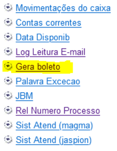
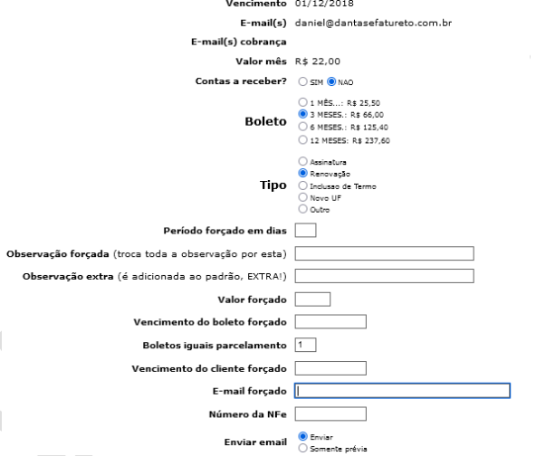
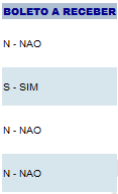

5. Envio de Boletos
Os boletos podem ser enviados de qualquer empresa do sistema, mas algumas
peculiaridades devem ser observadas:
- Logado na empresa 1, é possível filtrar e enviar boletos para clientes cadastrados em
qualquer empresa.
- Logado nas demais empresas, é possível filtrar e enviar boletos somente da empresa na
qual você está logado.
Para gerar e enviar um boleto, deve-se ir na opção de “Gera boleto” que se localiza na
árvore ao lado esquerdo da tela do cliente:

Sempre devemos observar o histórico de pagamentos e atendimentos do cliente antes de enviar o
boleto.
- 5.1. Valores, períodos, mensagens e datas:
É possível visualizar o valor mensal do cliente e os valores de cada período de assinatura. Basta clicar
na “bolinha” referente a cada período. Logo devemos marcar o “Tipo” do boleto.
No sistema, tudo o que se denomina como “Forçado”, quer indicar algo que será envia diferente do padrão
habitual do sistema.
O campo “Período forçado em dias” serve para alteramos o período que o boleto corresponderá. Um exemplo
seria um boleto de 4 meses. Não existe essa opção no sistema, mas para enviar esse boleto, podemos
colocar nesse campo 120 dias, que corresponde a 4 meses.
O campo “Observação forçada” serve para trocar o texto padrão do boleto por um outro. Veja o exemplo:
“ASSINATURA TRIMESTRAL
NÃO PROTESTAR ESTE TÍTULO
NÃO CORRA RISCO DE INTERRUPÇÃO DA ASSINATURA. PAGUE EM DIA."
Troca por:
“BOLETO COMPLEMENTAR DA ASSINATURA REFERENTE A INCLUSAO DA PESQUISA NO ESTADO DO PARANÁ”
O campo “Observação extra” serve para adicionar texto padrão do boleto por um outro. Veja o
exemplo:
“ASSINATURA TRIMESTRAL
NÃO PROTESTAR ESTE TÍTULO
NÃO CORRA RISCO DE INTERRUPÇÃO DA ASSINATURA. PAGUE EM DIA.
Boleto referente a leitura dos Diários de Minas Gerais e São Paulo"
O campo “Valor forçado” serve para trocar o valor padrão do boleto referente aquele período.
Geralmente é utilizado quando mudamos o “Período forçado em dias”, boleto complementar ou quando é
concedido algum desconto para o cliente.
O campo “Vencimento do boleto forçado” serve para trocar a data de vencimento padrão do boleto.
Nosso sistema emite boletos com vencimento para 5 dias após a emissão. Mas quando é necessário dar um
prazo maior ou menor para o pagamento, ou caso de parcelamentos, devemos alterar a data de vencimento do
boleto
O campo “Vencimento do cliente forçado” serve para trocar a data de vencimento do cadastro do cliente.
Funciona da mesma forma que o “Hist. Dt de Vencimento”, mas foi criada para facilitar o atendimento,
onde efetuamos dois procedimentos com apenas um clique. Esse campo funciona apenas quando marcamos
“Contas a receber? SIM”.

Esse sistema existe para liberar o serviço para um cliente antes dele efetuar o pagamento do
boleto.
Quando o cliente está vencido, ou pede um prazo maior para efetuar o pagamento e precisa receber o
serviço nesse período, deve-se enviar o boleto para ele e colocá-lo no “Contas a Receber.”
É possível fazer esse procedimento de duas formas: no momento em que o boleto é enviado (marcar Contas a
Receber = SIM) ou fazer a alteração no boleto já existente dentro do cadastro do cliente.

- 5.2.1. Contas a receber pelo Gera Boleto:
Quando o cliente está vencido, precisa das publicações, pede um boleto para renovação e precisa de prazo
para pagamento podemos gerar o boleto e colocá-lo no Contas a Receber pelo Gera Boleto.
Devemos marcar Contas a Receber? SIM. Em alguns casos é necessário preencher o vencimento forçado do
boleto, principalmente quando o cliente pede prazo. Em outros casos, é necessário preencher o Vencimento
forçado do Cliente, principalmente quando ele está vencido a muito tempo.
Após emitir o boleto, o sistema mostrará a mensagem:
Quando o cliente quer parcelar a assinatura/renovação, TODOS os boletos devem ser colocados no CONTAS A
RECEBER, sendo o primeiro boleto (correspondente a primeira parcela) emitido com o valor forçado
referente aquela parcela, e no campo “Observação extra” deve-se colocar “Parcela 1/3” por
exemplo.
Os outros boletos são marcados com “Período forçado em dias = 1”, a observação extra = Parcela 2/3 e o
valor correspondente a segunda parcela. Lembrando que o vencimento deve ser para um mês após o
vencimento da primeira parcela. Sempre no Contas a Receber.
Nesse caso, não é interessante utilizar o Contas a Receber do Gera Boleto, pois o cliente será
atualizado diversas vezes. Para que o procedimento não fique incompleto, envie o primeiro boleto
colocando-o no Contas a Receber pelo Gera Boleto e os demais envie sem marcar SIM no Contas a
Receber.
Logo que terminar a emissão de todos os boletos, volte ao cadastro e na tela “Boletos” abra um por um e
marque “Boleto a receber = SIM”. Lembrando que todos devem ser impressos.